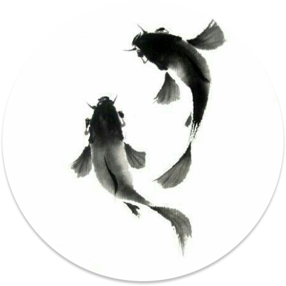

화려한 색채와 정교한 기법
궁중 민화는 일반 민화에 비해 더 화려한 색채와 세련된 기법이 특징입니다. 이는 왕실과 귀족들의 권위와 품격을 나타내기 위한 것으로, 정교한 세부 묘사가 돋보입니다.
궁중 그림은 조선 시대의 왕실과 귀족들의 생활과 문화를 담아낸 전통
예술 양식입니다.
이 그림들은 궁중의 일상생활, 의례, 그리고 자연과 신화를 주제로 하여
섬세하고 화려한 기법으로 그려졌습니다.
궁중 그림은 그 아름다움과 역사적 가치를 인정받아 오늘날까지도 많은
이들의 사랑을 받고 있습니다.

궁중 그림은 조선 시대의 사회적, 문화적 배경을 이해하는 데 중요한 역할을 합니다. 왕실의 취향과 생활 방식을 반영하는 이 그림들은 그 시대의 예술적 수준과 문화적 풍요로움을 보여줍니다. 또한, 궁중 그림은 당시의 의식주와 자연관, 신앙 등을 시각적으로 기록한 귀중한 유산입니다.
오늘날 궁중 그림은 전통을 보존하면서도 현대적 감각으로 재해석되어
다양한 예술 작품과 디자인에 활용되고 있습니다. 전통과 현대가
어우러진 궁중 그림은 우리의 문화유산을 더욱 풍부하게 만들고
있습니다.
궁중 민화는 일반 민화에 비해 더 화려한 색채와 세련된 기법이 특징입니다. 이는 왕실과 귀족들의 권위와 품격을 나타내기 위한 것으로, 정교한 세부 묘사가 돋보입니다.
자연경관, 신화 속 인물, 궁중의 일상 등 다양한 주제를 담고 있습니다. 이는 왕실의 생활상을 엿볼 수 있는 중요한 자료입니다.
각 그림에는 풍요, 장수, 행복 등 긍정적인 의미가 담겨 있습니다. 이는 궁중 민화가 단순한 장식이 아니라, 복을 기원하는 의미를 지니고 있음을 나타냅니다.

설날을 주제로 한 민화는 복을 기원하는 다양한 상징물이 그려져 있습니다. 복숭아, 박, 연꽃 등은 장수와 풍요를 상징하며, 어린아이들이 세배를 하는 모습, 차례상에 진설된 음식 등이 주된 소재로 사용됩니다. 이러한 민화는 설날의 따뜻한 분위기와 가족 간의 화합을 담고 있습니다.
추석을 주제로 한 민화에는 추수의 기쁨과 풍요로움이 가득 담겨 있습니다. 황금빛 들판, 넘쳐나는 곡식, 송편을 빚는 모습 등이 주된 소재로 등장합니다. 특히 강강술래와 같은 전통 놀이 장면이 그려진 민화는 공동체의 화합과 즐거움을 강조합니다.

즉위식을 주제로 한 민화는 웅장한 궁궐, 화려한 의복을 입은 왕과 신하들, 축하하는 백성들의 모습이 담겨 있습니다. 금박과 화려한 색채를 사용하여 왕실의 권위와 위엄을 강조하며, 새 왕의 즉위를 축하하는 의미가 담긴 상징적 요소들이 그려져 있습니다.
 일월오봉도
일월오봉도
 용봉도
용봉도
기우제를 주제로 한 민화에는 제사를 올리는 제단, 비를 기원하는 무리들, 하늘에 제사를 드리는 장면 등이 묘사됩니다. 기우제 민화는 간절한 기원을 표현하며, 자연과 인간의 조화를 강조합니다. 또한, 비를 상징하는 용과 같은 신화적 존재들이 등장하기도 합니다.

혼례를 주제로 한 민화는 신랑과 신부의 혼례복, 화려하게 장식된 혼례식장, 축하하는 가족과 친지들의 모습이 담겨 있습니다. 다양한 색채와 섬세한 묘사로 혼례의 기쁨과 축복을 표현하며, 사랑과 행복을 상징하는 꽃과 새, 복을 기원하는 다양한 상징물들이 등장합니다.

오늘날 우리는
이 소중한 유산을 통해
과거와 현재를 연결하며
새로운 미래를 꿈꿉니다.